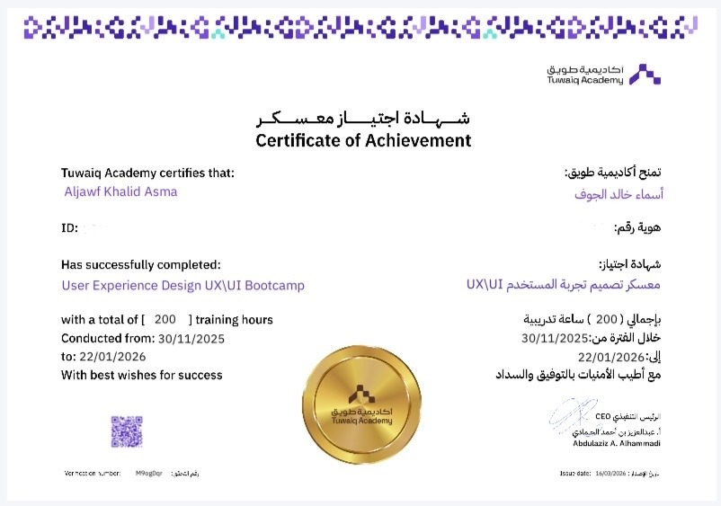
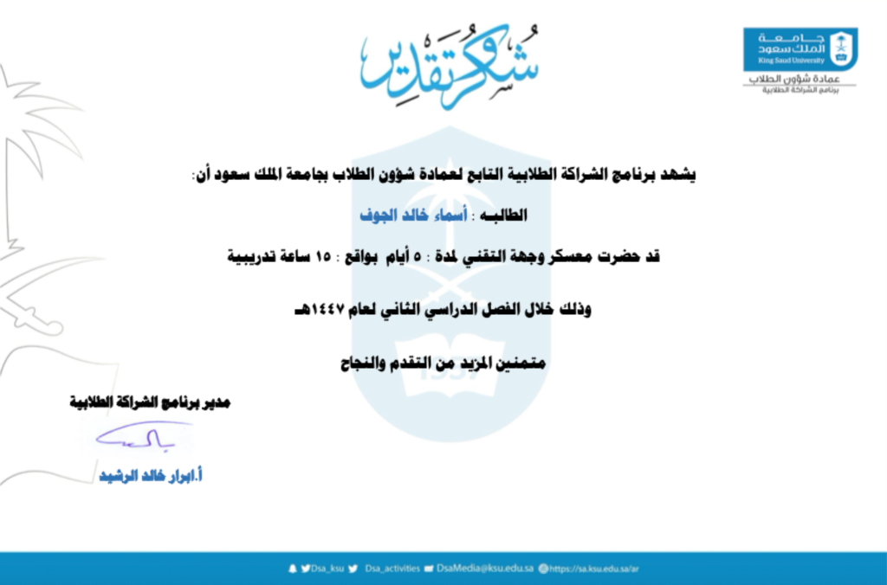
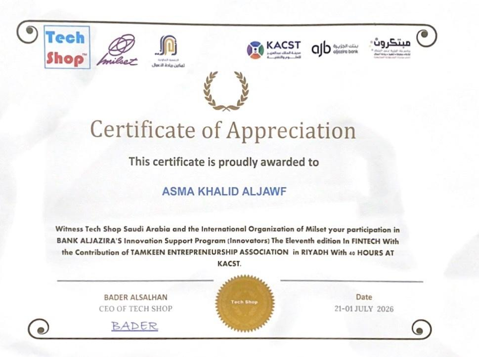
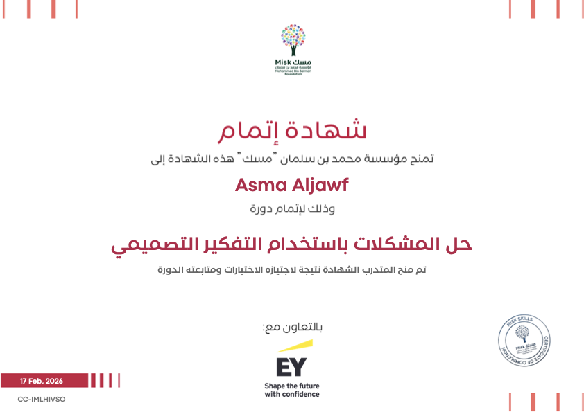
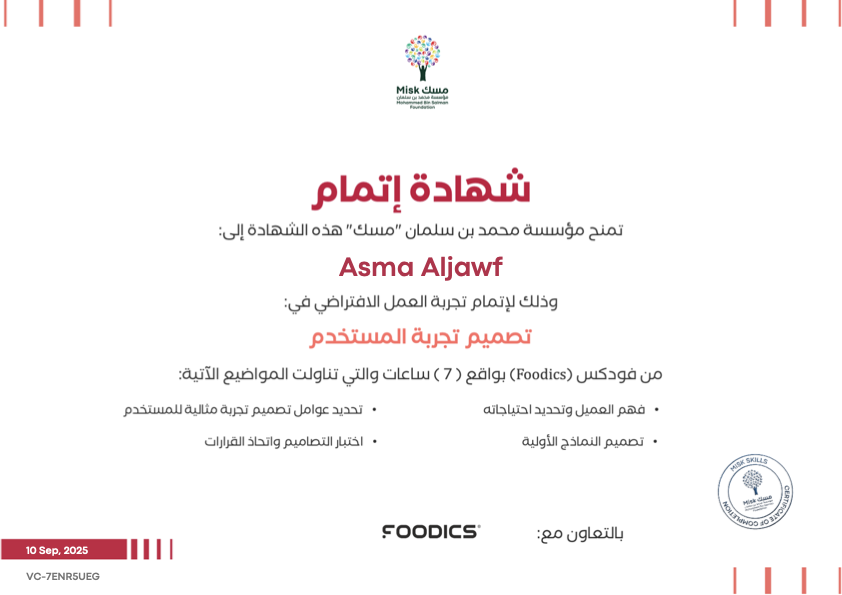

مشاريع
تصميم واجهات وتجربة مستخدم وتطوير واجهات أمامية
أصمم تجارب رقمية تجعل كل تفاعل ذو معنى
أصمم واجهات وتجارب مستخدم تركز على احتياجات المستخدم وتحقق الأهداف بأدوات وتقنيات حديثة لبناء حلول رقمية مفهومة ومبتكرة وسلسة.
Portfolio
</>
2026
تصميم
تجربة
أثر
تجربة
أثر
خبرات تدريبية
توافق مع أفضل الممارسات
تصميم يركز على المستخدم دائمًا
نبذة عني
خريجة علوم حاسب متخصصة في تصميم واجهات وتجربة المستخدم وتطوير الواجهات الأمامية. أعمل على تحويل الأفكار إلى تجارب رقمية تفاعلية وسهلة الاستخدام ذات تأثير.
التعليم
بكالوريوس في علوم الحاسب
جامعة الأمير سطام بن عبدالعزيز
المهارات
تصميم وتجربة المستخدم (UI/UX)
User-Centered Design
UX Research
Usability Testing
Information Architecture
Visual Design
Design Systems
تطوير الواجهات الأمامية (Frontend)
HTML5
CSS3
JavaScript
أدوات ومنهجيات العمل (Tools)
Figma
Agile & Scrum
Problem Solving
الخبرات العملية
مصممة واجهات وتجربة مستخدم | KASCCO GROUP
صممت وأطلقت أكثر من 4 مواقع إلكترونية عالية التأثير مع تجربة مستخدم سلسة وهوية بصرية حديثة.
معسكر تصميم واجهات وتجربة المستخدم | أكاديمية طويق
نفذت أبحاث UX لأكثر من 3 مشاريع رئيسية وطورت نماذج أولية حسنت تدفق المستخدم.
متدربة UI/UX | عمادة تقنية المعلومات
أعدت تصميم أكثر من 5 نماذج خدمات رقمية مع الالتزام بمعايير الوصول الشامل WCAG.
أبرز المشاريع
عرض جميع المشاريع
تطبيق قصد
تصميم رحلة مستخدم كاملة لتسهيل أداء مناسك العمرة.
Qasd App
موقع نقطة
تصميم موقع تسويقي مع صفحة هبوط عالية التحويل.
Nuqtah Website
منصة فينلانس
تصميم وتطوير واجهات منصة مالية متجاوبة.
Finlance Platformالشهادات والبرامج التدريبية
عرض الكل
معسكر تصميم تجربة المستخدم UX/UI
أكاديمية طويق، مارس 2026

معسكر وجهة التقني
جامعة الملك سعود، مايو 2026

برنامج مبتكرون النسخة 11
يوليو 2026

حل المشكلات باستخدام التفكير التصميمي
مؤسسة مسك بالتعاون مع EY، فبراير 2026

تجربة العمل الافتراضي في تصميم تجربة المستخدم
مؤسسة مسك بالتعاون مع Foodics، سبتمبر 2025
برنامج البرمجة التوليدية
سدايا (قريباً)